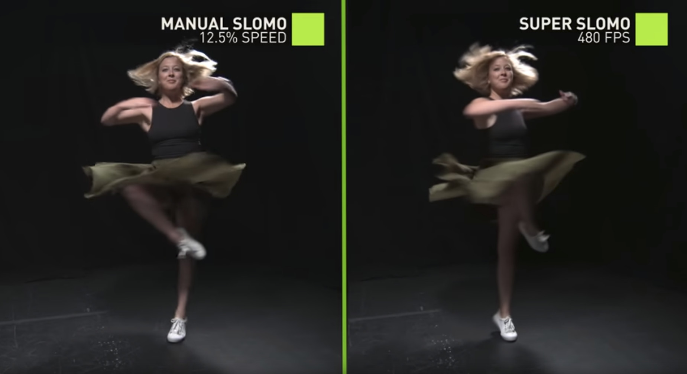

Deep Learning for Content Creation Tutorial
In conjunction with CVPR 2019


Goal of the tutorial
Content creation has several important applications ranging from virtual reality, videography, gaming, and even retail and advertising. The recent progress of deep learning and machine learning techniques allows to turn hours of manual, painstaking content creation work into minutes or seconds of automated work. This tutorial has several goals. First, it will cover some introductory concepts to help interested researchers from other fields get started in this exciting new area. Second, it will present selected success cases to advertise how deep learning can be used for content creation. More broadly, it will serve as a forum to discuss the latest topics in content creation and the challenges that vision and learning researchers can help solve.
Organizers:
Deqing Sun, Ming-Yu Liu, Orazio Gallo, and Jan KautzSponsors:
Date, time, and location:
See you on Sunday June 16th at 8:45 in room 204.News
- We have a great line-up of confirmed speakers, see program below!
- The tutorial was very successful, we would like to thank the speakers and the audience again!
- Videos of most of the talks will be available soon!
Tentative program